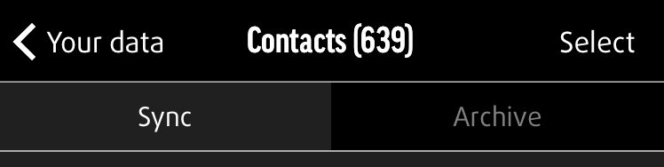

Sharing Saved Items to Other Apps
Synced and archived data can be shared from within the app. Select the items (e.g. photos, videos, documents etc.) you want to share and in the bottom left hand corner select the Share icon (a box with an arrow pointing out to the top), which will display your sharing options, just as you would see on your device.
